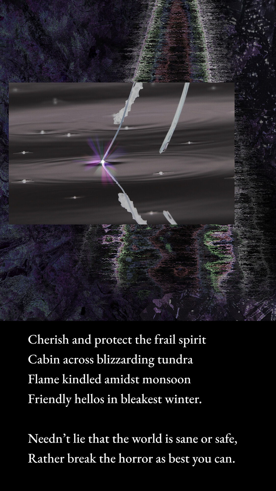
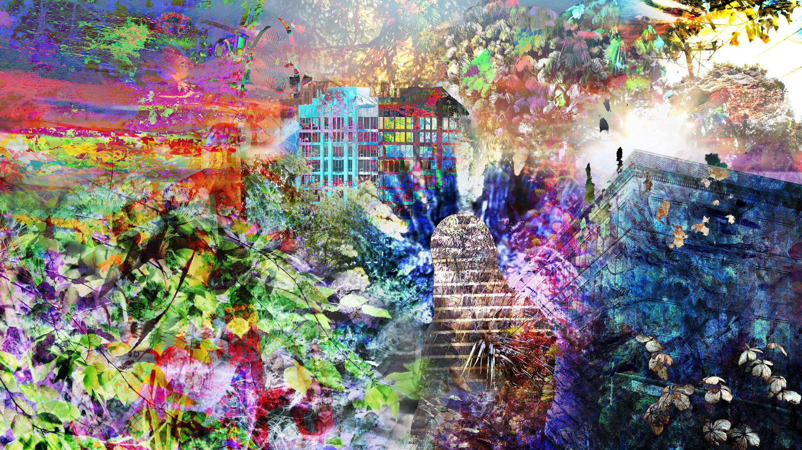

Elliot Callender
Home
Writing
Hobbies
Timeline
Confusion
Post-College (Digital)

For the poem Intolerable I wrote a while ago
I made this for my Kashmiri friend who goes by Noonie

This was my first experiment with composite photography and digital art
← College (Digital)
 I made this for my Kashmiri friend who goes by Noonie
I made this for my Kashmiri friend who goes by Noonie